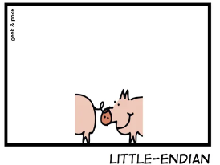
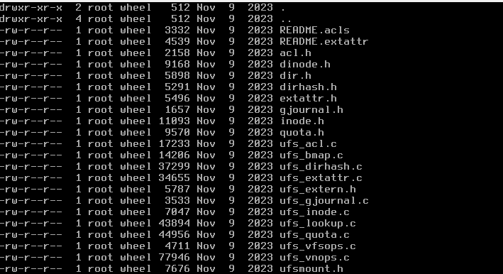
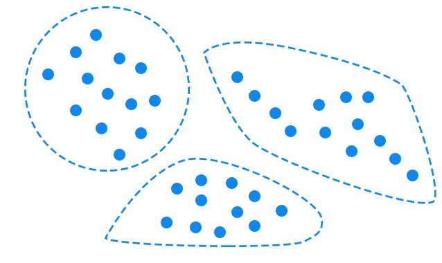
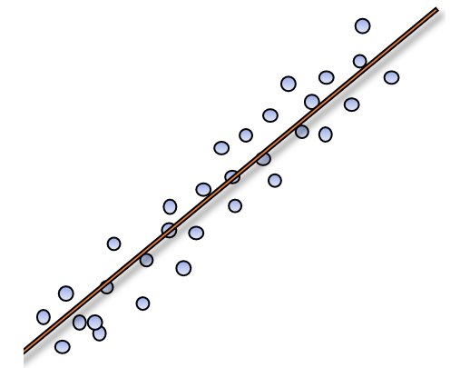
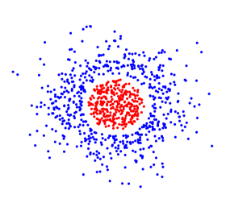
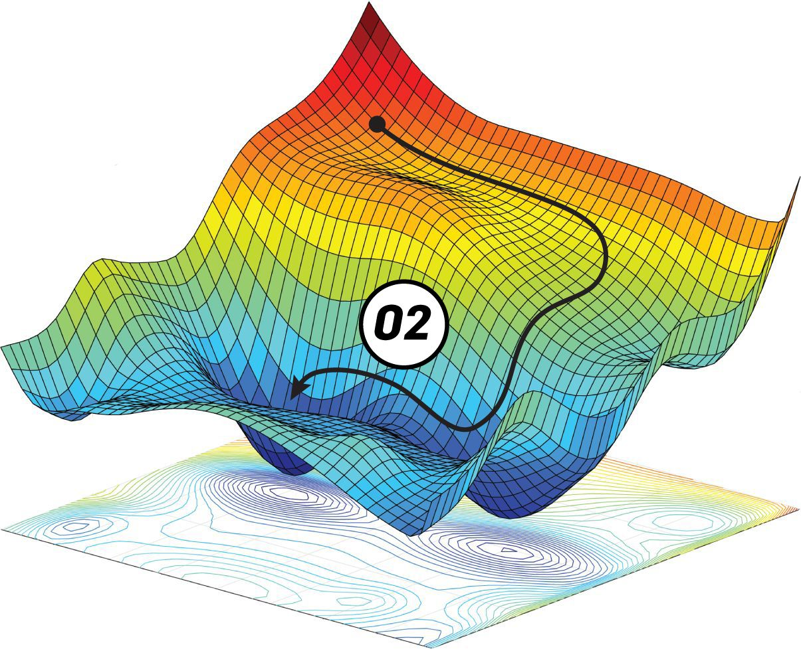
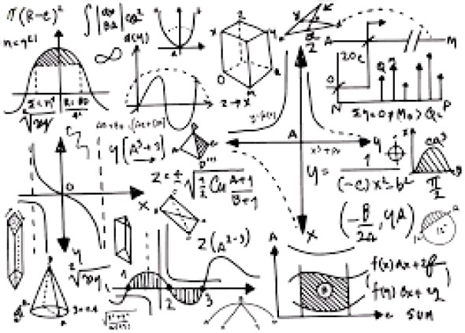
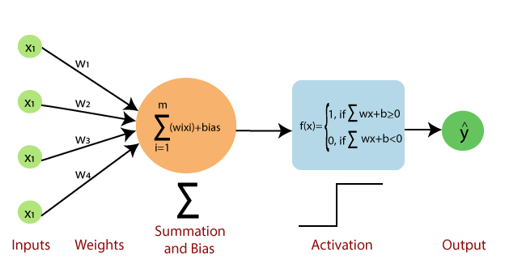

An in-depth explanation of the ‘little-endian’ byte order and what implications that has when exploiting a machine that has this byte order.
[Spoiler Alert]: In this blog series, I will share my insights and solutions for the Capture The Flag (CTF) challenges found on pwnable.kr
This blog post explores a simplified Stack-Based Buffer Overflow exploit, demonstrating it through a carefully crafted C program and a detailed GDB analysis.

Writing a C program that traverses the structures used to represent files (and directories) in UFS2 (Unix File System) and renames a file/directory

Image Compression using Singular Value Decomposition
Training a Model to predict Employment for Different Individuals and then Audit the Model to Display Potential Biases across different Racial Groups

Two Different Implementations of the Linear Regression Algorithm

An Implementation and Testing of Kernel Logistic Regression for Binary Classification of Data with Non-Linear Decision Boundaries

Different Implementations of the Gradient Descent Algorithm, for Linearly Non-Separable Data

Using Mathematics to prove why the Perceptron Learning Rule works

An Implementation of the Perceptron Algorithm